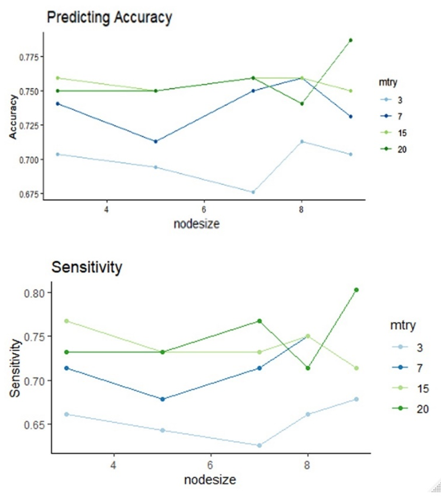
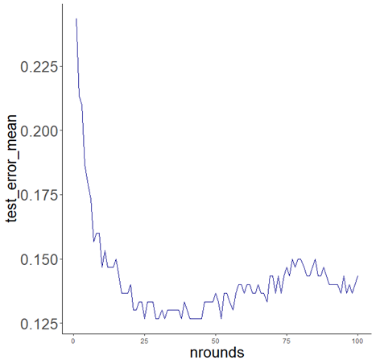
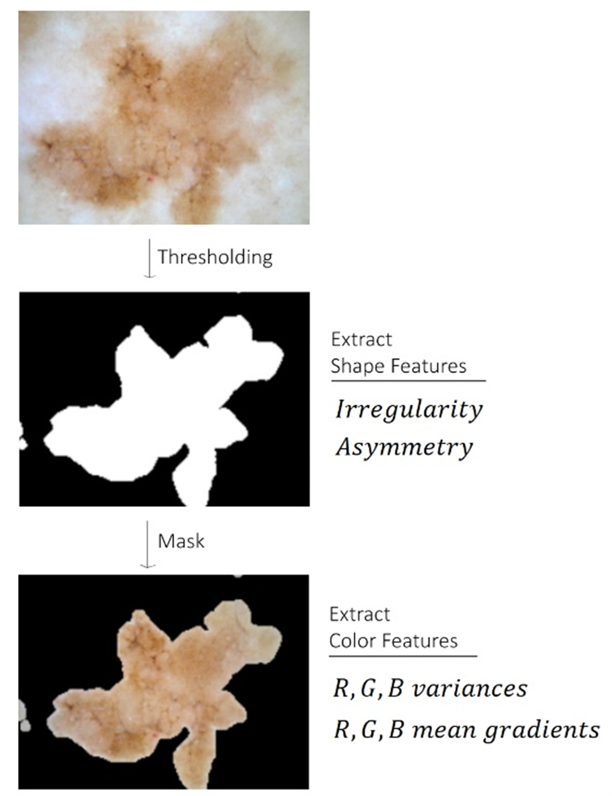
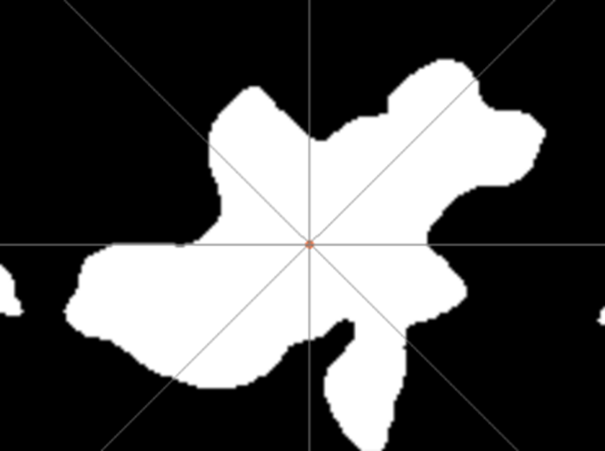
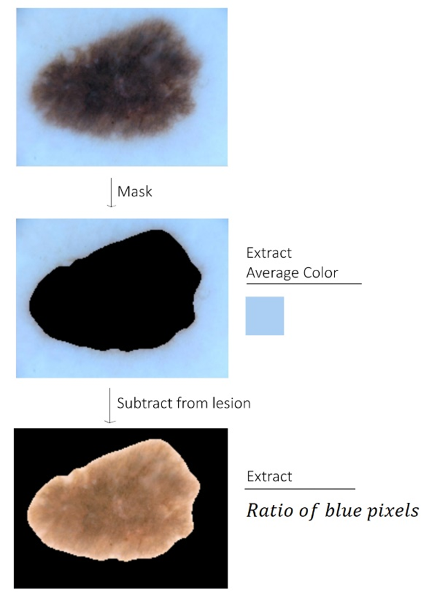
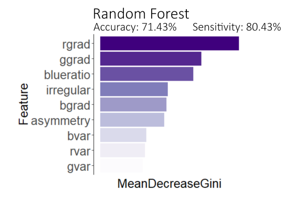
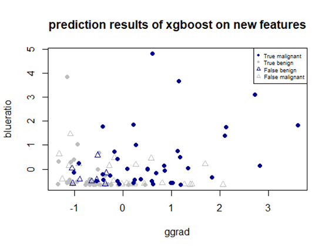
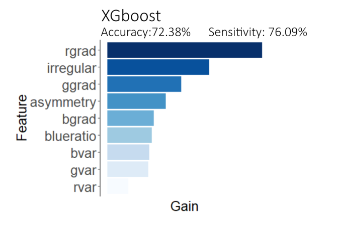
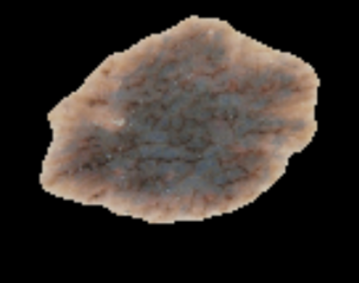

Skin Cancer Classification
Co-author: Yuanyuan Zheng
Introduction
The dataset contains images of 150 benign lesions and 150 malignant lesions offered by ISIC. Our goal for this project is to build classification models based on 300 images of moles with statistical learning methods to identify whether a mole is malignant only by its image information.
We mainly use two different approaches: learning on pixels and learning on extracted features. For the first part, we do a singular value decomposition to a total of 90000 pixels and pick only 40 principals variables, then we train three different classification models (Random Forest, SVM and XGBoost) on them. We get about 70% accuracy and 68% sensitivity for SVM, and 72% accuracy, 71% sensitivity for random forest, and 72% accuracy, 70% sensitivity for xgboost.
For the second part, we extract 9 biological variables manually, indicating a lesion’s color variance, color gradient, ratio of blue surface, border irregularity and asymmetry, and use them to do classification without using any variable from part 1. Results of the second approach approximates the results from learning pixels, which is 71% testing accuracy and 80% testing sensitivity. showing that our features do catch the pattern of malignant lesions.
One concern of us is that detecting malignant lesions is more important than identifying benign lesions. So, will pay more attention on sensitivity (ratio of correctly detected malignant lesions).
Data Preprocessing
The original images are large, and most of them are 600*450 sized. So, we resized all the picture to 200*150 pixels large and read them into R by RGB channel. Each image is read as a 200*150*3 array, then is flattened to a vector of 90000 length.
Now the column size is much larger than the row size of our dataset. To avoid dimensionality curse, we apply principle component analysis (PCA) by singular value decomposition (SVD), which is:
We pick 40 columns from the reformed X. The 40 columns contain 95% variation of 90000 total columns.
Considering lack of training data, we use bootstrap to split the images into training and testing set. 300 images with replacement form the training data, and the 105 images left are the testing data.
Classification Based on Pixels
Model 1 - SVM
1. Introduction
Support Vector Machines (SVM) are a machine learning paradigm used widely for classification problems recent years. The attractive thing of this model is that, though it is a linear classifier, it can be used to deal with nonlinear classification problems with kernel trick.
2. Tuning
In this part we try three classical kernels and compare their results: radial (RBF)l kernel, linear kernel and polynomial kernel. Different parameters are used for these kernels, and we search the best model that gives best validation accuracy for each kernel first, then compare the results between kernels. For RBF kernel, we tuned Gamma and cost, and for the other two, we tuned Gamma, cost and coef0.
3. Results
| Kernel | Cost | Gamma | Coef0 | Accuracy | sensitivity |
|---|---|---|---|---|---|
| RBF | 3 | 0.02 | 0.69982 | 0.67 | |
| Linear | 0.01 | 0.66055 | 0.54 | ||
| Polynomial | 0.1 | 0.02 | 1 | 0.69725 | 0.52 |
Here are our results from cross validation, including the kernel used, the best parameter combination, accuracies and sensitivities on testing set are shown in the table above. It’s shown from the table that when the corresponding best parameter combinations are used, RBF kernel results in the best predicting accuracy and prediction of 70% and 67% respectively. The sensitivity is a bit lower than the accuracy, which means our svm is not performing well on detecting malignant lesions.
Model 2 – Random Forest
1. Introduction
Random forest is a tree-based ensemble learning model. It does random subsampling to the variables, generate results from different trees and hence get more robust results. We believe it will perform well on our data.
2. Tuning
We fix our tree numbers to be 300, we believe it’s a reasonable number that avoids overfitting. Then we use testing score to search the best parameter combination of mtry and nodesize given ntree=300. Again, prediction accuracy on testing set is used as our metric. It’s demonstrated from the line graphs that, with 300 trees a relatively large nodesize and large mtry return highest predicting accuracy and sensitivity. And this is our final choice. But note that both mtry=20 and nodesize=9 show large variation. Hence if we want a more valid result, mtry=15 and nodesize=3 will be a better choice.
3. Results
With mtry=15 and nodesize=3, predicting accuracy and sensitivity on testing set are 72.38% and 71.74% respectively. The result is much better than the SVM, showing that random forests do perform good on classification with small datasets. And we notice that the result varies greatly according to the random seed we use. Because many malignant lesions look very similar to benign ones, and even dermatologist can’t 100% correctly classify them. So if we get many of these unidentifiable malignant lesions in our testing set, the result would drop rapidly.
Model 2 – XGBoost
1. Introduction
Extreme Gradient Boosting (XGBoost) is a fast tree-based gradient boosting method. We think gradient boosting can handle our problem well because it implements weight to the variables. And we choose XGBoost because it adds information second-order gradients and it runs very fast.
2. Tuning
We use random search method to tune the 3 most crutial parameters in Xgboost: the eta, nrounds and max_depth. Our searching area is:
- eta: 0.01 to 0.3
- nrounds: 100 to 500
- max_depth: 3 to 10
3. Results
We then apply eta=0.2776, max_depth=4 and nrounds=25 to our testing data. The testing accuracy is 72.38% and the sensitivity is 69.56%. The result is not as good as random forest. (Since we used random search, this might not be the best parameters for XGBoost. ) In general, we recommend random forest for this task.
More Interpretable Features
Literature Review
Many literatures have studied into the features of skin cancer.
In Extraction of Specific parameters for skin tumour classification, written by M. Messadi, A. Bessaid and A. Taleb-Ahmed, it says:
We used the ABCD rule (A: asymmetry, B: border, C: colour and D: diameter) to help distinguish between these different tumours. The choice of this rule is based on dermatology criteria: shape, color and symmetry.
And on MoleScope, a medical website, there are more explanations:
Asymmetrical moles are abnormal and should be checked by a doctor.” “Blurred, jagged, or irregular borders are a sign that the mole could be cancerous.” “Healthy moles usually have one even color, while irregular moles can contain multiple shades of color. It is also important to make note of any blue or white colors that may be present in your moles, as this is a sign that the mole may be cancerous.”, “In general, if a mole is larger than 6 mm, it is a warning sign.” and “If your mole develops symptoms like itching, tenderness or bleeding, or is evolving in any way over time, this is a warning sign.
So our guidelines for extracting features are as follows:
- Malignant lesions are more asymmetrical in shapes
- Malignant lesions have more irregular borders
- Malignant lesions have higher color variance (both in color and in brightness)
- Blue color appears more frequently on malignant lesions
Feature Extracting
We first implement contrast enhancement and median filter to the images, in order to clean the pixels. We also removed the camera shades in the image by auto filling and adding a mask created manually. Image size is kept as 200*150 pixels.
1. Irregularity
We use a Triclass Thresholding technique to get a binary image. The border length p is then calculated by counting pixels that have a non-zero x gradient or y gradient, area a is number of white pixels. Our measurement for border irregularity is:
2. Asymmetry
We calculate the differences between areas about the horizontal & vertical axes, get Δs1 and Δs2, then we rotate the image 45° and get the same differences between areas Δs3 and Δs4. We take the minimum difference among these four as the measurement of asymmetry.

3. Color Variance
Variances of colors within the lesion area are calculated on R, G, B channels respectively.
And to catch the transition of color, we also calculate the mean gradient of R, G, B color along both x’s and y’s directions.
4. Ratio of Blue Surface
We find that some images are blue casted, so the first thing we do is to fix color cast by subtracting an average skin color from the lesion. Then we get the ratio of blue surface by calculating the number of pixels where blue is higher than red and green divided by total lesion area.
Modeling
In this part, we drop all pixel features we used in part 1 and use only features we extracted. Random Forest and XGboost are chosen to do the classification tasks. Bootstrap splitting and tuning processes are the same as what we did in part 1, with no repeat here. Again, we are concerned about both the accuracy and sensitivity, which is the models’ ability to detect malignant lesions.
1. Random Forest
With nodesize = 3, mtry = 3 and ntree = 200, we get 71.43% prediction accuracy and 80.43% sensitivity performed on testing images. We plot the variable importance (mean decreased Gini) in the right picture. Color gradient features are proved to be most useful (while red gradients win the 1st place), followed by the ratio of blue surface and two shape features. Color variance features are not contributing as much as the color gradients, because these three variables calculate the mean variation of color and are not containing spatial relationship of colors. 
We plot our data on two axes, the rgrad and blueratio. We find that there are certain patten caught by these two variables. Looking at the points in the upper right: many malignant lesions do have very high blue surface ratio and high red color gradient. And our model is capable of correctly identify them. But for those malignant lesions that has both low blue ratio and red gradient, we misclassified many of them.
2. XGBoost
Now we try the XGBoost. And because it is tree-based, we can also get variable gain calculated. For tuning parameter, we use random search with 20 different combinations of max_depth, eta and nrounds, and choose one with the highest overall accuracy. Our final model attains 72% accuracy and 76% sensitivity. Right is a picture showing the variable importance given by XGboost. It is similar with that from random forest. Again, red gradient is the most important feature. We guess it is because brown is consisted mostly by red color and thus it catches the color transition of the many brown lesions.
3. Comparison
Using XGboost, we get a little bit higher accuracy but much lower sensitivity than the random forest. We suggest using the random forest, because sensitivity is sometimes more important than accuracy. For those lesions who are misclassified as malignant, we can still do b-ultrasound and CT scan for further diagnosis.
Discussion
One drawback of our models is we fail to catch the white color in the lesion. The white surface of the lesion is often classified as the background. We think that is because the white color is not “white” enough. As a correction, we implement contrast enhancement to the images, and hence get better results. But many white lesions are still not segmented well. An alternative algorithm might be the snake algorithm, which directly finds the contour of the lesion.
Another drawback of our models is that the result varies largely each time we split the data with a different random series. Accuracy and sensitivity in both models vary from 70% to 80%. There are two possible explanations for that: 1. Lack of training data; 2. Our features are missing some information and are thus not capable of detecting certain features. We check the images that are misclassified. One representative is the lesion shown in the right, it’s a regular-shaped lesion, generally brown, but with many thin black lines crawling on its surface. Human eyes can easily catch those small lines, but the mean color variance and mean color gradients are unable to describe this feature. One potential solution we considered is calculating variance and gradients on a rolling window, with relatively small window sizes.